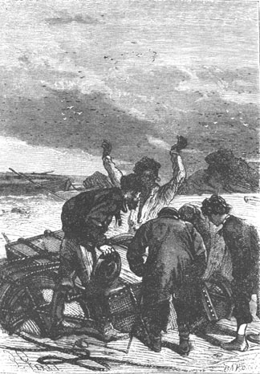
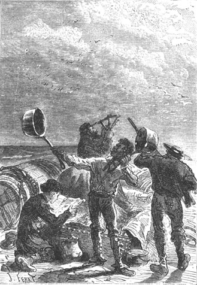
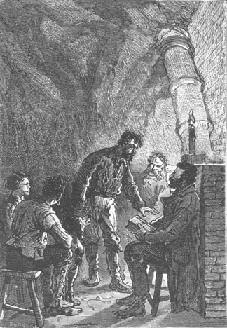

On October 29th the bark canoe was completely finished. Pencroff had kept his promise and in five days a sort of canoe, whose hull was ribbed with the flexible wood of the crejimba, had been constructed. A seat in the rear, a second seat in the middle to maintain the separation, a third seat in front, a flat board to support the tholes of two oars, a stern oar to steer, made up this twelve foot long boat which did not weigh two hundred pounds. As to the launching operation, it was extremely simple. The light canoe was carried to the sand on the shore in front of Granite House and the rising tide lifted it up. Pencroff immediately jumped in, worked in the scull and declared that it was very suitable for whatever use they wanted to make of it.
“Hurrah!” cried the sailor, who did not disdain to celebrate his own triumph in this way. “With this we can make a tour...”
“Of the world?” asked Gideon Spilett.
“No, of the island. Some rocks for ballast, a mast up front and a bit of a sail which Mister Smith will make for us one day and we will go far. Well, Mister Cyrus and you Mister Spilett and you Herbert and you Neb, aren’t you going to try out our new boat? The devil! Let’s see if it can carry all five of us.”
In fact, this was a test to make. Pencroff, with a stroke of the scull, brought the boat to the shore through a narrow passage among the rocks and it was agreed that they would try out the canoe on this very day by following the shoreline up to the first point where the rocks in the south came to an end.
At the moment of embarking, Neb cried:
“But your boat leaks badly, Pencroff!”
“That’s nothing, Neb,” replied the sailor. “It is necessary for the wood to become watertight. In two days it will no longer be apparent and our canoe will have no more water inside it than there is in the stomach of drunkard. Embark!”
They then got in and Pencroff drove out. The weather was magnificent, the sea as calm as if its waters were contained within the narrow banks of a lake and the canoe could confront the sea with as much security as if it were ascending the tranquil current of the Mercy.
Neb took one of the oars, Herbert the other and Pencroff stayed in the rear of the boat in order to work the scull.
The sailor first crossed the channel, grazing the southern point of the islet. A light wind blew from the south. There was no swell neither in the channel nor on the sea. Several long waves that the canoe hardly felt because it was heavily loaded, regularly swelled the surface of the sea. They went out about a half mile from shore in order to see all of Mount Franklin.
Pencroff went along the shore to the mouth of the river. The canoe then followed the rounded shoreline up to its end point, which hid all of the marshy Tadorns plain.
This point, whose distance was increased by the curvature of the coast, was about three miles from the Mercy. The colonists decided to go to its end and to pass it only a little in order to take a quick look at the coast up to Cape Claw.
The canoe therefore followed the coast at a distance of two cables at most, thus avoiding the rocks strewn on the shoreline, which were beginning to be covered by the rising tide. The wall became lower from the river’s mouth up to the point. It was a pile of granite blocks, randomly distributed, of an extremely savage aspect and very different from the facade that formed Grand View Plateau. One would have said that an enormous cartload of rocks had been emptied there. There was no vegetation on this very sharp salient which extended for two miles in front of the forest and this point looked very much like the arms of a giant who was about to emerge from a channel of foliage.
The canoe, moved by the two oars, advanced without difficulty. Gideon Spilett, pencil in one hand, notebook in the other, sketched the coast in large strokes. Neb, Pencroff and Herbert chatted while examining this new part of their domain and as the canoe moved southward, the two Mandible Capes appeared to shift and enclose Union Bay.
As to Cyrus Smith, he looked but said nothing and from the mistrust expressed by his look, it seemed as if he were observing some strange country.
However, after a navigation of three quarters of an hour, the canoe arrived at the extremity of the point, and Pencroff prepared to double it when Herbert, getting up, pointed to a black spot and said:
“What do I see there on the beach?”
Everyone looked toward the indicated point.
“In fact,” said the reporter, “something is there. One would say a piece of wreckage half buried in the sand.”
“Ah!” cried Pencroff, “I see what it is.”
“What?” asked Neb.
“Barrels, barrels, which may be full,” replied the sailor.
“To shore, Pencroff,” said Cyrus Smith.
In a few strokes of the oar, the canoe landed in a small cove and the passengers leaped to shore.
Pencroff was not mistaken. Two barrels were there, half buried in the sand but still securely attached to a large case which, held up by the water, had floated in this way until the moment when it had become stranded on the beach.
“Has there been a wreck hereabout on the island?” asked Herbert.
“Evidently,” replied Gideon Spilett.
“But what is in this case?” cried Pencroff, naturally impatient. “What is in this case? It is locked and there’s nothing to break the lid. Well, a few blows with a rock then.”

“But what is in this case?”
And the sailor, picking up a heavy block, went to break open one of the sides of the case when the engineer stopped him.
“Pencroff,” he said to him, “can you restrain your impatience for only an hour?”
“But just think, Mister Cyrus. Perhaps everything we need is inside.”
“We will know, Pencroff,” replied the engineer, “but believe me, do not break this case which may be useful to us. Let us transport it to Granite House where we will open it more easily and without breaking it. It is fully prepared for the voyage and since it has floated this far it will also float to the river’s mouth.”
“You are right, Mister Cyrus, and I am wrong,” replied the sailor, “but I am not always in control of myself.”
The engineer’s advice was sensible. In fact, the canoe would not be able to hold the objects which were probably enclosed in the case. They had to be heavy since it was necessary to relieve the load by means of two empty barrels. Thus, it would be better to tow it as is to the beach in front of Granite House.
And now from whence came this wreckage? This was an important question. Cyrus Smith and his companions carefully looked around and scoured the shore for a space of several hundred feet. No other debris appeared.
The sea was also observed. Herbert and Neb climbed to a high rock but the horizon was deserted. Nothing was in sight, neither a disabled ship nor a vessel under sail.
However, there was no doubt that there had been a wreck. Perhaps even, this incident was associated with the incident of the lead bullet? Perhaps some strangers had landed on another point of the island? Perhaps they were still there? But the colonists could see that these strangers could not be Malayan pirates because the wreck was evidently of American or European origin.
Everyone returned to the case which measured five feet in length by three in width. It was made of oak wood, very carefully closed and covered by a thick skin held in place with copper nails. The two large barrels, hermetically sealed but sounding empty, were tied by means of strong cords and knotted by knots which Pencroff easily recognized as “sailor’s knots”. It appeared to be in a perfect state of preservation, which was explained by the fact that it had run aground on a sandy beach and not on the reefs. On examining it carefully, they could even say that its sojourn on the sea had not been long and also that its arrival on the shore was recent. The water did not seem to have penetrated inside and the objects which it contained would be intact.
It was evident that this case had been thrown overboard from a disabled vessel heading toward the island and that, in the hope that it would reach the island where they would later recover it, the passengers had taken the precaution of lightening it by means of a floating apparatus.
“We will tow this wreckage to Granite House” said the engineer, “and we will make an inventory of it; then if we find some survivors of this presumed wreck on the island, we will return the contents to them. If we find no one...”
“We will keep it for ourselves,” cried Pencroff. “But, by God, what is inside?”
Already the tide began to reach the wreck, which evidently could float in the open sea. One of the cords attached to the barrels was partly unraveled and used to tie the floating apparatus to the canoe. Then Pencroff and Neb excavated into the sand with their oars in order to facilitate the movement of the case. Soon the boat, towing the case, began to double the point which was given the name Flotsam Point. The towing was sluggish and the barrels were barely sufficient to hold the case above the water. The sailor feared that at any moment it would detach and sink to the bottom. But happily his fears were not realized and an hour and a half after leaving—it took all this time to travel this distance of three miles—the canoe came alongside the beach in front of Granite House.
Canoe and case were then hauled onto the sand and since the tide was already going down it was not long in leaving it high and dry. Neb brought tools to force the case in a way that would damage it as little as possible and they proceeded to its inventory. Pencroff could not hide his excitement.
The sailor began by detaching the two barrels which, being in very good condition, would find uses, that goes without saying. Then the locks were forced with a crowbar and the lid was taken off at once.
A double envelope of zinc lined the interior of the case which had evidently been designed so that the enclosed objects would be protected from the dampness under all circumstances.
“Ah!” cried Neb, “what if there are preserves inside?”
“I hope not,” replied the reporter.
“If only there was...,” said the sailor in a low voice.
“What?” asked Neb, who overhead him.
“Nothing!”
The zinc cover was broken along its entire length, then turned down on the sides of the case and little by little various objects of different kinds were extracted and placed on the sand. With each new object, Pencroff gave out new hurrahs, Herbert clapped and Neb danced. There were books which made Herbert mad with joy and kitchen utensils which Neb covered with kisses.
As to the remainder, the colonists were extremely satisfied because the case contained tools, arms, instruments, clothes, books, and here is the exact nomenclature as written in Gideon Spilett’s notebook.

As to the remainder, the colonists were satisfied.
Tools: three knives with several blades, two woodsman’s axes, two carpenter’s axes, three planes, two adzes, one twibil, six cold chisels, two files, three hammers, three gimlets, two augers, ten sacks of nails and screws, three saws of various sizes, and two boxes of needles.
Arms: two flintlock guns, two percussion cap guns, two carbines with central ignition, five cutlasses, four sabers, two barrels of powder each containing 25 pounds, and twelve boxes of fulminate primers.
Instruments: one sextant, one pair of binoculars, one telescope, one box compass, one pocket compass, one Fahrenheit thermometer, one aneroid barometer, one box containing a complete photographic apparatus, objective, plates, chemicals, etc.
Clothing: two dozen shirts of a particular fiber resembling wool, but evidently of a vegetable origin and three dozen hose of the same fiber.
Utensils: one iron pot, six galvanized copper saucepans, three iron plates, ten aluminum table settings, two kettles, one small portable stove and six table knives.
Books: one bible containing the old and new testaments, one atlas, one dictionary of various Polynesian dialects, one dictionary on natural science in six volumes, three reams of blank paper and two record books of blank paper.
“It must be admitted,” said the reporter, after the inventory was completed, “that the owner of this case was a practical man. Tools, arms, instruments, clothing, utensils, books, nothing is missing. One would say that he expected to be wrecked and that he prepared in advance.”
“In fact, nothing is missing,” murmured Cyrus Smith thoughtfully.
“And it’s a sure bet,” added Herbert, “that the ship which brought this case and the owner were not Malayan pirates.”
“Unless,” said Pencroff, “the owner had been made a prisoner by the pirates...”
“That is not admissible,” replied the reporter. “It is more likely that an American or European ship had been drawn into these waters and that the passengers, wanting to save some essential things at least, prepared this case and threw it into the sea.”
“Is that your opinion, Mister Cyrus?” asked Herbert.
“Yes, my child,” replied the engineer, “it may have happened in this way. It is possible that for a time they expected to be wrecked so they placed the most useful objects in this case in order to retrieve it at some point on the coast...”
“Even the photography box!” noted the sailor rather incredulously.
“As to that apparatus,” replied Cyrus Smith, “I do not quite see its utility and a more complete assortment of clothing or more ammunition would be of better value to us as to other castaways.”
“But isn’t there some mark or address on these instruments, tools or books which will let us know who made them?” asked Gideon Spilett.
This was to be seen. Each item was carefully examined, especially the books, the instruments and the arms. Neither the arms nor the instruments, contrary to custom, carried the manufacturer’s mark; they were besides, in perfect condition and they seemed to have never been used. Especially the tools and utensils; everything was new, which proved, in short, that these items had not been taken at random and thrown into the case but, on the contrary, that the choice of these items had been made thoughtfully and their arrangement was made carefully. This was further indicted by this second envelope of metal which had protected it from the dampness and which could not have been soldered in a moment of haste.
As to the dictionaries of natural science and Polynesian dialects, both were in English but they did not carry the editor’s name nor the date of publication.
Even the bible, printed in English in quarto was remarkable from a typographical point of view and appeared to have been thumbed through often.
As to the atlas, it was a magnificent work in French nomenclature, containing maps of the entire world and several planispheres based on Mercator projection—but it did not carry the date of publication nor the name of the editor.
Among all these various items there was no indication as to the country of origin and nothing consequently to let them guess as to the nationality of the vessel which had so recently passed through these waters. But regardless of where it came from, it gave riches to the colonists of Lincoln Island. Until then, by transforming the products of nature, they had made everything by themselves, and thanks to their intelligence they had attended to their affairs. But did it not seem that Providence wished to reward them by bringing them these various products of human industry. Their thanks went unanimously to heaven.
However, one of them was not absolutely satisfied. It was Pencroff. It seemed that the case did not enclose the one thing he wanted enormously and as each of the items were taken out his hurrahs diminished in intensity and, with the inventory completed, one heard him murmur these words.
“This is all good and well, but you can see that there is nothing for me in this box!”
This brought Neb to say to him:
“So, friend Pencroff, what did you expect?”
“A half pound of tobacco,” Pencroff replied seriously, “and nothing would be lacking for my happiness.”
They could not help laughing at the sailor’s comment.
But as a result of the discovery of this case it was now more than ever necessary to make a serious exploration of the island. It was therefore agreed that the next day, at daybreak, they would get underway, ascend the Mercy in order to reach the western shore. If some castaways had landed on this part of the coast, it was to be feared that they were without resources and that help should be brought to them without delay.
During this day, the various items were carried to Granite House and methodically arranged in the large hall. This day—October 29th—was a Sunday and before going to bed Herbert asked the engineer if he would read to them some passage from the gospel.
“Gladly,” replied Cyrus Smith.
He took the sacred book and was going to open it when Pencroff stopped him and said to him:
“Mister Cyrus, I am superstitious. Open at random and read to us the first verse that catches your eye. We will see if it applies to our situation.”

“Mister Cyrus, I am superstitious.”
Cyrus Smith smiled at the sailor’s idea and obliging he opened the gospel exactly where a ribbon separated the pages.
Suddenly his attention was fixed on a red cross which was made with a pencil and placed in front of Chapter VII, Verse 8 of the Gospel of Saint Matthew.
And he read this verse as follows:
“For everyone that asketh receiveth; and he that seeketh findeth.”